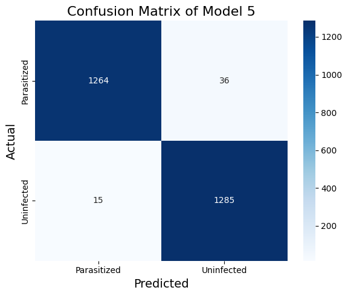

2024-08-20
In the previous post, we built a finetuned VGG16-based model (Model 4) to detect malaria from cell images. We finetuned the VGG16 model by taking part of the trained VGG16 model, and append 2 more CNN layers followed by 2 ANN layers and retrain the 4 layers on our malaria dataset. In this post, I am trying a different approach to finetuning the VGG16 model using Low Rank Adaptation (LoRA). I will be using the LoRA method to adapt the weights of the trained VGG16 model to the malaria dataset.
Low-rank adaptation (LoRA) is a technique for adapting pre-trained neural networks to new tasks, particularly when finetuning the entire model is computationally expensive or when data is scarce. LoRA leverages the concept of low-rank approximation to efficiently adapt a large model to new data by learning a smaller number of parameters.
The main idea of LoRA is to keep the pre-trained model parameters frozen and introduce only a small number of trainable parameters capable of capturing task-specific information. Therefore, instead of modifying the full weight matrix of a layer as we did previously to finetune VGG16, LoRA introduces a low-rank weight matrix that is mixed with the pre-trained weights from VGG16.
Suppose we have a pre-trained model with a weight matrix $ W ^{d k} $ for a specific layer, where $ d $ is the input dimension, and $ k $ is the output dimension. The goal is to adapt $ W $ to a new task with minimal changes. In the traditional finetuning approach, we would retrain $ W $ directly. Equivalently, we can view this as holding $ W $ fixed, add add a perturbation matrix $ W $ to $ W $:
W' = W + \Delta W
The traditional finetuning process would train the $ W $.
LoRA assumes that a low-rank decomposition can approximate the change $ W $. Specifically, we decompose $ W $ into two much smaller matrices $ A ^{d r} $ and $ B ^{r k} $, where $ r (d, k) $:
\Delta W = A B
Therefore, the adapted weight matrix $ W’ $ becomes:
W' = W + A B
Here, $ A $ and $ B $ are the trainable parameters, while the original $ W $ remains fixed.
The low-rank adaptation significantly reduces the number of trainable parameters. For example, instead of learning $ d k $ parameters for $ W $, we only need to learn $ r (d + k) $ parameters for $ A $ and $ B $, which can be orders of magnitude fewer than $ d k $ when $ r $ is small. This time reduction is especially beneficial for large models, where finetuning all parameters would be computationally expensive and prone to overfitting.
In convolutional layers, $ W $ is a tensor instead of a matrix. Therefore, we must change the matrix multiplication operation $ A’ B $ to a tensor operation since $ A B $ to produce multi-dimensional tensors with the same shape as $ W $. The original convolution done in a Conv2D layer is $ Y = X W + b $, and with LoRA, we have
\begin{equation} \begin{aligned} Y &= X \ast (W + \Delta W) + b \\ &= X \ast (W + A \ast B) + b \\ &= X \ast W + X \ast A \ast B + b \\ \end{aligned} \end{equation}
The final output is the sum of the original convolution output and the output of the low-rank adaptation, computed in two steps:
We implemented a LoRAConv2D layer using TensorFlow Keras as follows.
class LoRAConv2D(tf.keras.layers.Layer):
def __init__(self, filters, kernel_size, strides, padding, rank, **kwargs):
super(LoRAConv2D, self).__init__(**kwargs)
self.filters = filters
self.kernel_size = kernel_size
self.rank = rank
self.strides = strides
self.padding = padding
def build(self, input_shape):
# Original convolution weights (frozen)
self.conv_weight = self.add_weight(
shape=(self.kernel_size[0], self.kernel_size[1], input_shape[-1], self.filters),
initializer='glorot_uniform',
trainable=False, name='conv_weight'
)
# Original bias weights (frozen)
self.bias = self.add_weight(
shape=(self.filters,),
initializer='zeros',
trainable=False, name='bias'
)
# Low-rank adaptation weights
self.A = self.add_weight(
shape=(
self.kernel_size[0], self.kernel_size[1],
input_shape[-1], self.rank
),
initializer='glorot_uniform',
trainable=True, name='A'
)
self.B = self.add_weight(
shape=(1, 1, self.rank, self.filters),
initializer='glorot_uniform',
trainable=True, name='B'
)
def call(self, inputs):
# Original convolution operation
original_output = tf.nn.conv2d(
inputs, self.conv_weight, strides=self.strides, padding=self.padding.upper()
)
# Low-rank adaptation (Two convolutions with A and B)
delta_output = tf.nn.conv2d(inputs, self.A, strides=(1, 1), padding='SAME')
delta_output = tf.nn.conv2d(delta_output, self.B, strides=(1, 1), padding='SAME')
output = original_output + delta_output
output = tf.nn.bias_add(output, self.bias)
return outputWe build a model_5 that takes the VGG16 model and applies LoRA to the last three convolutional layers of the model. The setup of the fully connected layers is kept the same as our model_4 setup.
def build_model_5():
set_seed()
vgg16_model.trainable = False
transfer_layer = vgg16_model.get_layer('block4_pool')
b5_conv1 = vgg16_model.get_layer('block5_conv1')
b5_conv2 = vgg16_model.get_layer('block5_conv2')
b5_conv3 = vgg16_model.get_layer('block5_conv3')
b5_conv1_weight = b5_conv1.get_weights()[0]
b5_conv2_weight = b5_conv2.get_weights()[0]
b5_conv3_weight = b5_conv3.get_weights()[0]
b5_conv1_bias = b5_conv1.get_weights()[1]
b5_conv2_bias = b5_conv2.get_weights()[1]
b5_conv3_bias = b5_conv3.get_weights()[1]
x = LoRAConv2D(kernel_size=b5_conv1.kernel_size, filters=b5_conv1.filters, strides=b5_conv1.strides, padding=b5_conv1.padding, rank=5)(transfer_layer.output)
x = LoRAConv2D(kernel_size=b5_conv2.kernel_size, filters=b5_conv2.filters, strides=b5_conv2.strides, padding=b5_conv2.padding, rank=5)(x)
x = LoRAConv2D(kernel_size=b5_conv3.kernel_size, filters=b5_conv3.filters, strides=b5_conv3.strides, padding=b5_conv3.padding, rank=5)(x)
x = MaxPooling2D(pool_size=(2, 2))(x)
x = LeakyReLU(alpha=0.1)(x)
x = Flatten()(x)
x = Dense(512)(x)
x = BatchNormalization()(x)
x = LeakyReLU(alpha=0.1)(x)
x = Dropout(0.5)(x)
x = Dense(256)(x)
x = BatchNormalization()(x)
x = LeakyReLU(alpha=0.1)(x)
x = Dropout(0.5)(x)
pred = Dense(2, activation='softmax')(x)
model = Model(vgg16_model.input, pred)
model.get_layer('lo_ra_conv2d').conv_weight.assign(b5_conv1_weight)
model.get_layer('lo_ra_conv2d_1').conv_weight.assign(b5_conv2_weight)
model.get_layer('lo_ra_conv2d_2').conv_weight.assign(b5_conv3_weight)
model.get_layer('lo_ra_conv2d').bias.assign(b5_conv1_bias)
model.get_layer('lo_ra_conv2d_1').bias.assign(b5_conv2_bias)
model.get_layer('lo_ra_conv2d_2').bias.assign(b5_conv3_bias)
return modelTable 1 shows the classification report of the VGG16 model with LoRA finetuning (model_5). The LoRA finetuned VGG16 model perform about as well as the traditionally finetuned VGG16 (model_4, results in Table 2). The recall metric on the parasitized cases is a bit lower but the model achieves the best precision thus far. In model_4, we finetune with two convolutional layers and two dense layers. In model_5, we finetune with the last three Conv2D layers with LoRA and two dense layers.
Table 1. The Classification Report of Model 5
| precision | recall | f1-score | support | |
|---|---|---|---|---|
| Uninfected | 0.97 | 0.99 | 0.98 | 1300 |
| Parasitized | 0.99 | 0.97 | 0.98 | 1300 |
| accuracy | 0.98 | 2600 | ||
| macro avg | 0.98 | 0.98 | 0.98 | 2600 |
| weighted avg | 0.98 | 0.98 | 0.98 | 2600 |
Table 2. The Classification Report of Model 4
| Precision | Recall | F1-Score | Support | |
|---|---|---|---|---|
| Uninfected | 0.99 | 0.96 | 0.98 | 1300 |
| Parasitized | 0.97 | 0.99 | 0.98 | 1300 |
| accuracy | 0.98 | 2600 | ||
| macro avg | 0.98 | 0.98 | 0.98 | 2600 |
| weighted avg | 0.98 | 0.98 | 0.98 | 2600 |
